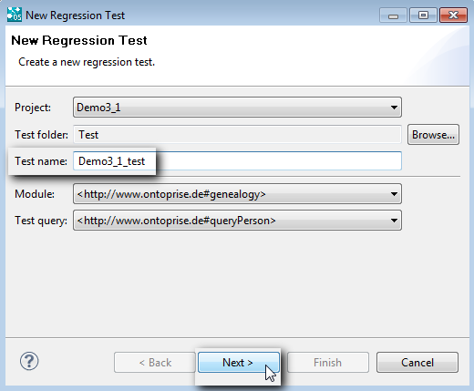

|

|
|
Running a Regression Test |
|
|
|
|
Running a Regression Test |
The Regression Test Runner ensures the stability of an ontology and the correctness of the modeled rules contained in your ontologies.
You can define test cases using the regression test feature. The query and the expected query result are stored in such a test case. After a test case has been created, this test can be executed at any time against the current state of the model. You will be notified whether the test(s) completed successfully or the returned result differs from the stored result set.
To create a new test, proceed as follows:
| 1. | Make a right mouse click on the query and then click on New Test.... |
A dialog box appears:

| 2. | Fill out the empty fields. |
You can choose a name for the test and a folder it should be stored in.
| 3. | Click on Next. |
The results of the query are displayed.
| 4. | Click on Finish. |
A new ".qrt" file is added to the test directory for the project.
It's possible to copy/move tests and folders via drag and drop (only in the same project).
| 5. | Select/execute a test. |
The Entity Properties Page for this test is displayed in the main area of OntoStudio. The page contains the query and the expected result set:
| 6. | The regression tests can now be run at any time. If at least one test or test folder is selected, you can choose Run tests from the context menu. |
All selected tests are evaluated and compared against the stored information. If a folder is selected, all of the tests in the folder will be run.
The information about the correctness of the executed tests is shown in the Regression Test View. Here you can see how many tests have been run, how many of them completed successfully and how many have failed.
Sometimes when the model has changed, the results may differ from the results stored in the test case. In that case, you have the possibility to accept the returned results by clicking on Accept at the bottom of the page. The current results will then be stored as the expected results for the test case.
| 7. | To show the property page for the test which already contains the query text, select the test that has been run. |
| 8. | To run the test again, click on Rerun test. |